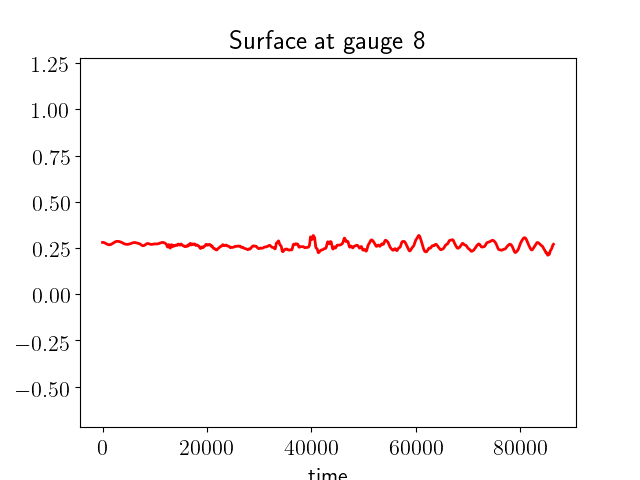

< < < Index > > >

Image source: /Users/hudaqureshi/surge-examples/square_basin/_plots/gauge0008fig300.png
Other figures at this time: Surface & topo All Figures
Other gauges: 0 1 2 3 4 5 6 7 8 9 10 11 12 13 14 15 16 17 18 19 20 All Gauges